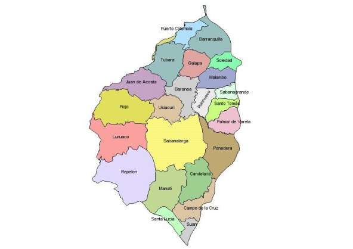

Quienes Somos?
Somos una red de Gestión Ambiental creada con el fin de interconectar de manera virtual todos los municipios del Departamento del Atlántico en materia ambiental para contar con información de primera mano sobre la situación ambiental del departamento.

Mision
Ser la red pública departamental encargada de la gestión Ambiental y promover la recuperación, conservación, protección, ordenamiento, manejo, uso y aprovechamiento de los recursos naturales renovables, a fin de asegurar el desarrollo sostenible y garantizar el derecho de todos los ciudadanos a gozar y heredar un ambiente sano.